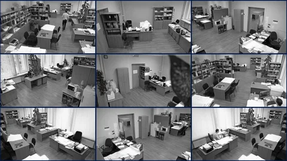

Secure Your Business: Office Security Solutions from 333 Security
The safety and security of your employees, property, and confidential information are paramount concerns for any business owner or manager. At 333 Security Systems, we understand the unique security challenges faced by office buildings and offer a comprehensive range of solutions to keep your workplace safe and secure.
Here's how we can help:
- **Access Control Systems:** Restrict access to sensitive areas with keycard entry, key fobs, or biometric scanners.
- **CCTV Surveillance:** Monitor your office interior and exterior with strategically placed high-definition cameras for 24/7 vigilance.
- **Intruder Alarm Systems:** Deter and detect unauthorized entry with alarms that trigger immediate response.
- **Fire Safety Systems:** Ensure the safety of your employees with fire alarms, sprinkler systems, and emergency evacuation plans.
- **Security Patrol Services:** Enhance your security posture with regular patrols by trained security professionals.
We understand that every office building has its own specific security needs. Our experienced consultants will work closely with you to assess your vulnerabilities and develop a customized security plan that meets your budget and requirements.
Contact us today for a consultation and learn how 333 Security Systems can help you create a safer and more secure work environment for your employees.
Email offices@333security.co.uk | Phone 07447 688333